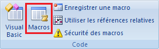
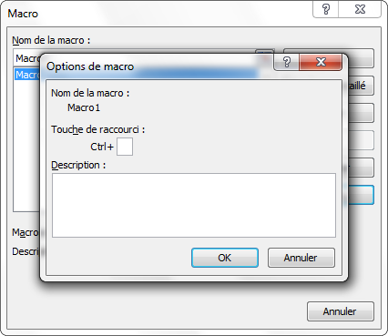
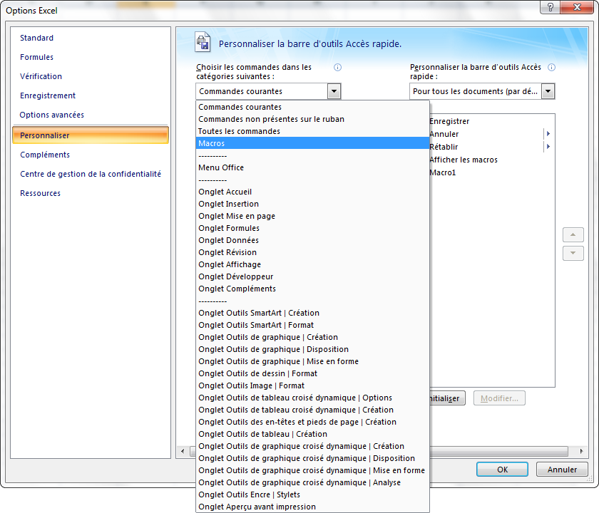

Bonus 2 - Les divers moyens d'exécuter une macro
Nous allons voir plusieurs moyens d'exécuter une macro dans EXCEL de manière plus conviviale qu’à partir de l'outil Macros.
Exécuter une macro à partir d'un raccourci clavier
1) Ouvrir l'interface des Macros en cliquant sur le bouton ci-dessous (onglet Développeur) :

2) Sélectionner la macro Macro1 et cliquer sur le bouton OPTIONS.... La fenêtre suivante s'ouvre alors :

3) Taper une lettre (g par exemple) dans la zone TOUCHE DE RACCOURCI.
La zone DESCRIPTION permet de saisir un texte explicatif.
4) Cliquer sur le bouton OK.
6) Fermer la fenêtre Macro en cliquant sur son bouton ANNULER ou sur son bouton de fermeture.
7) Vérifier que le raccourci clavier (ctrl+g par exemple) provoque l'exécution de la macro MACRO1.
Si le raccourci clavier choisi était déjà attribué à une commande Excel (ctrl+s par exemple, pour sauvegarder), il sera réattribué à la Macro sans que l'on soit informé.
Exécuter une macro à partir d'un bouton d'une barre d'outils
1) Faire un clic droit sur l'onglet Afficher puis cliquer sur Personnaliser la barre d'outils.
2) Ouvrir le menu déroulant Choisir les commandes dans les catégories suivantes : et sélectionner "Macros".

3) Double cliquer sur la Macro1 et cliquer sur OK.
Le bouton de la Macro1 est maintenant dans la barre d'outil Accès Rapide en haut de la fenêtre.